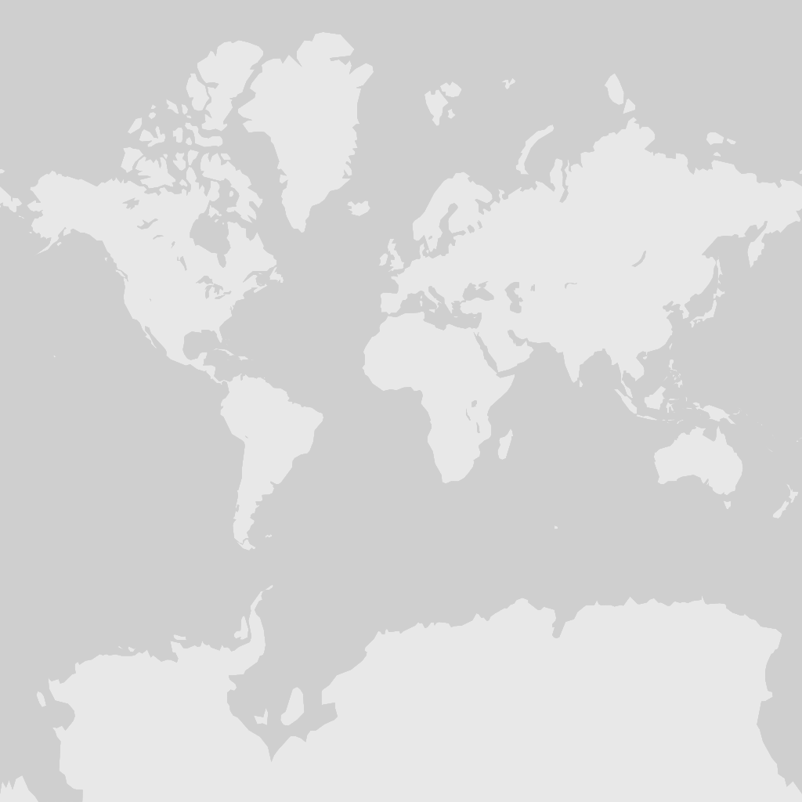

© Bird Explorers / iNaturalist (CC BY-NC)
Anatidae · Anseriformes
Suirirí Cariblanco
Dendrocygna viduata LC
En los humedales y pantanos de agua dulce que se extienden desde Costa Rica hasta el norte de Argentina y Uruguay, habita una criatura de notable elegancia: el Suirirí Cariblanco (Dendrocygna viduata). Esta ave acuática destaca de inmediato entre los miembros de su género gracias al marcado contraste de su plumaje. Mientras que su corona y la parte posterior del cuello lucen un intenso color negro, sus mejillas y frente ostentan un blanco impoluto que facilita su reconocimiento en el campo. De hábitos eminentemente nocturnos, el Suirirí Cariblanco descansa durante las horas centrales del día y se desplaza al anochecer hacia las orillas y zonas someras para alimentarse.
Su dieta es omnívora y equilibrada, compuesta por semillas, hierbas y pequeños moluscos acuáticos, lo que convierte a esta especie en un importante regulador de invertebrados y dispersor de plantas en los ecosistemas continentales. Al llegar la temporada reproductiva, el Suirirí Cariblanco suele formar colonias laxas y nidificar entre la hierba alta o los cañaverales. Allí, utilizando la vegetación circundante, teje un nido oculto a ras de suelo o sobre el agua. El suave silbido de tres notas que emite al volar en la penumbra es una de las firmas sonoras más emblemáticas de los humedales neotropicales.
Identificación en campo
- Cara y frente de color blanco puro que contrastan con la parte posterior de la cabeza y el cuello negros.
- Pecho de tono castaño rojizo y flancos deslumbrantes con fino barreteado en blanco y negro.
- Pico y patas de tonalidades oscuras, adaptados a la vida en aguas someras.
- Llamado acústico en forma de silbido claro de tres notas, muy distintivo en vuelos nocturnos.

 © OpenStreetMap · GBIF
© OpenStreetMap · GBIF